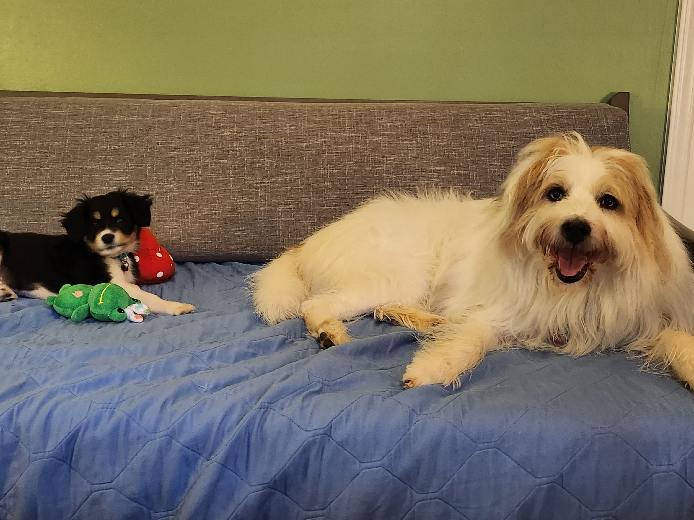

Automating Development Environments with Ansible & Chezmoi
2024-03-16
About Me
- Principal Software Engineer at Red Hat
- console.redhat.com subscriptions Tech Lead
- Raleigh, NC
- @kahowell@mastodon.social
- https://kahowell.net

Why
 System replacement
System replacement
 Multiple machines
Multiple machines
 Share between Work & Home
Share between Work & Home
Pets vs. Cattle


Other Motivations
Learn a new skill
Share
 Cool Factor
Cool Factor
Ansible - Why
- automate lots of things
- python

Ansible Installation
dnf install -y ansiblefor Ubuntu
apt install -y ansible
Ansible - Basic Workflow
# update it to do some stuff
$EDITOR tasks/main.yml
# run it - lazy shortcut
ansible -K localhost -c local \
-m include_role -a name=$USER-environment(and commit/push to a repo for sharing)

Packages
Package types:
- rpm/deb
- flatpak
- snap
- homebrew (linuxbrew)
- name: Install RPMs
ansible.builtin.dnf:
name:
- '@Development Tools'
- ansible-lint
Package Origin Preferences
- Distro packages
- Flatpak
- Homebrew
- Snap

System Config - Files
files/no-passwords.conf
PasswordAuthentication noAnsible:
- name: Disable ssh password authentication
become: true
ansible.builtin.copy:
src: no-passwords.conf
dest: /etc/ssh/sshd_config.d/no-passwords.conf
mode: '0600'
System Config - Templates
templates/sudoers-custom.j2
{{ ansible_user_id }} ALL=(ALL) NOPASSWD: ALLAnsible:
- name: Land sudoers template
ansible.builtin.template:
src: sudoers-custom.j2
dest: /etc/sudoers.d/sudoers-custom
validate: /usr/sbin/visudo -cf %s
Ansible - Other Capabilities
- Manage users/groups
- Manage services/jobs (systemd & cron)
- Execute commands/scripts

Tools
Useful code that isn’t distro packaged (yet)
 GitHub Releases
GitHub Releases
 Python Packages
Python Packages
Node Packages